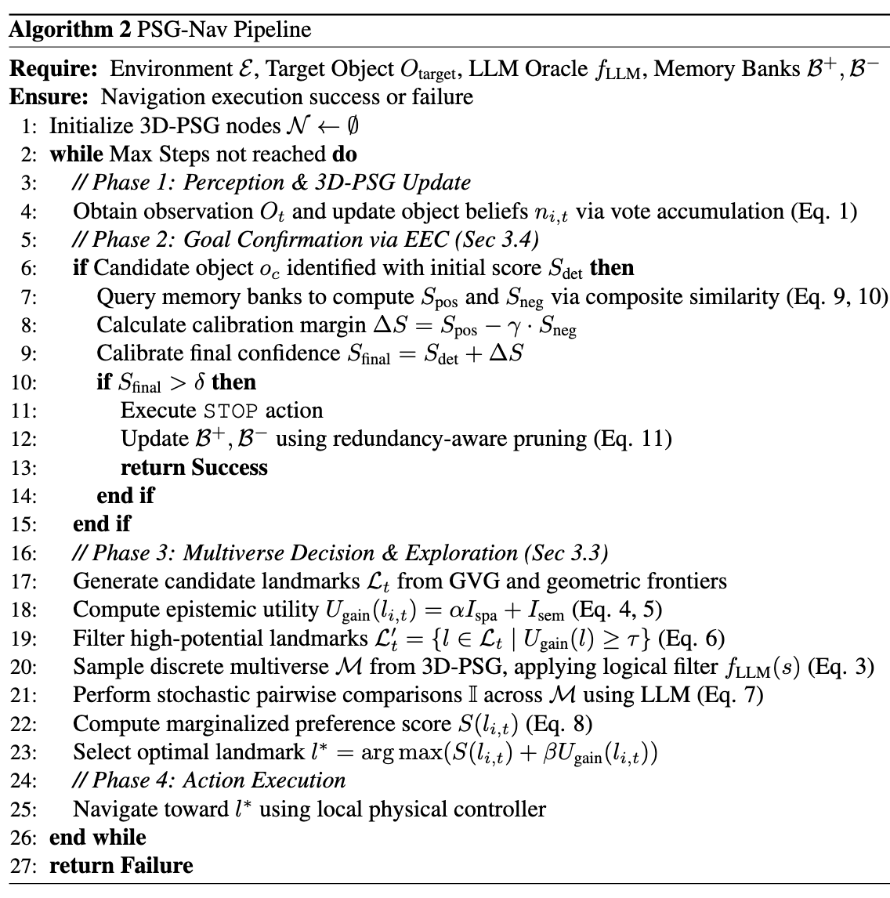

Figure 1. Overview of PSG-Nav: (1) 3D Probabilistic Scene Graph construction with hierarchical categorical distributions; (2) Multiverse Decision for uncertainty-aware landmark selection; (3) Evidential Experience Calibrator for robust goal verification.
Abstract
Open-vocabulary navigation requires embodied agents to manage significant perception uncertainty stemming from semantic ambiguity and model errors. However, most existing works settle for locally-optimal deterministic approaches, depriving complex navigation decision-making over multiple composite possibilities that are critical for globally better solutions.
In this paper, we propose Probabilistic Scene Graph Navigation (PSG-Nav), which constructs a 3D Probabilistic Scene Graph that uses full semantic categorical distributions to account for perception uncertainty. To efficiently use the local distributions to compose and reason about the optimal navigation landmarks, we propose Multiverse Decision to sample multiple most-likely world settings from the joint distribution, and evaluate navigation landmarks based on the compatibility between landmarks and worlds.
Furthermore, we introduce the Evidential Experience Calibrator (EEC) to maintain a dynamic evidential memory that calibrates the agent's goal verification process, effectively reducing false positives caused by noisy perception in long-horizon exploration.
PSG-Nav achieves new state-of-the-art on HM3D, MP3D, and HSSD benchmarks, surpassing the strong deterministic baseline SG-Nav by a massive +12.1% SR margin on HM3D.
Method
PSG-Nav consists of three key components: (1) a 3D Probabilistic Scene Graph that models perception uncertainty via categorical distributions over object classes at each node; (2) a Multiverse Decision module that samples multiple plausible world states and selects navigation landmarks that are robust across worlds; and (3) an Evidential Experience Calibrator (EEC) that maintains an evidential memory to correct false positive goal verification.
Figure 2. Detailed architecture of the PSG-Nav framework.
Algorithm
The complete algorithmic workflow of PSG-Nav is summarized below.

Algorithm 1. The complete algorithmic workflow of PSG-Nav.
Main Results
We evaluate PSG-Nav on three challenging benchmarks: HM3D, MP3D, and HSSD.
PSG-Nav achieves new state-of-the-art results across all three datasets under the Success Rate (SR) and SPL metrics.
Table 1. Comparison with state-of-the-art methods on HM3D, MP3D, and HSSD benchmarks. PSG-Nav achieves new SOTA across all three datasets (SR↑ / SPL↑).
+12.1%
SR improvement on HM3D over SG-Nav
SOTA
on HM3D, MP3D, and HSSD
3
Benchmarks evaluated
Qualitative Results
Visualizations of PSG-Nav's navigation trajectories on HM3D, MP3D, and HSSD.
HM3D — Representative navigation trajectories.
MP3D — Representative navigation trajectories.
HSSD — Representative navigation trajectories.
EEC Error Correction Demos
Demonstrations of the Evidential Experience Calibrator (EEC) correcting false positive detections and improving goal verification accuracy in simulation.
HM3D — Chair. The EEC module learns from past failures and rejects false positive detections.
HM3D — Plant. After rejecting a false positive, the agent continues searching and finds the true target.
HM3D — TV. The perception model repeatedly misidentifies a refrigerator as a TV. EEC learns from this failure pattern and correctly rejects it.
MP3D — Chest of Drawers. After two rejections, the agent successfully finds the true target.
HM3D-OVON (Open-Vocabulary)
Demonstrations of PSG-Nav on the HM3D-OVON benchmark, where navigation targets are specified by open-vocabulary object descriptions beyond standard category labels.
Objective: "Find cloths." The agent successfully navigates to the target object in the HM3D-OVON environment.
Objective: "Find a pillow." The agent successfully navigates to the target object in the HM3D-OVON environment.
Objective: "Find a rug." The agent successfully navigates to the target object in the HM3D-OVON environment.
Real-World Experiments
Our robotic platform is built upon an Agilex SCOUT MINI chassis.
The sensor suite comprises a RealSense D435 RGB-D camera, a CH110 IMU, and dual Livox MID 360 LiDARs.
All processing is performed onboard via an NVIDIA Jetson AGX Xavier.
Figure 3. Our custom robotic platform built upon an Agilex SCOUT MINI chassis.
Physical robot deployment demonstrating PSG-Nav in real indoor environments.
Real-world — Chair. The agent rejects a sofa misidentified as a chair based on past experience, and continues until it finds the true chair.
Real-world — Keyboard. The robot successfully navigates to the target placed in a toilet scenario, demonstrating robustness to unusual object placements.
Citation
If you find our work useful, please consider citing:
@inproceedings{psgnav2026,
title={PSG-Nav: Probabilistic Scene Graph Navigation via Multiverse Decision Making},
author={TODO: Fill in author names},
booktitle={Proceedings of the 43rd International Conference on Machine Learning (ICML)},
year={2026}
}